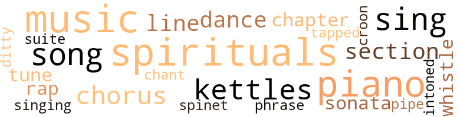
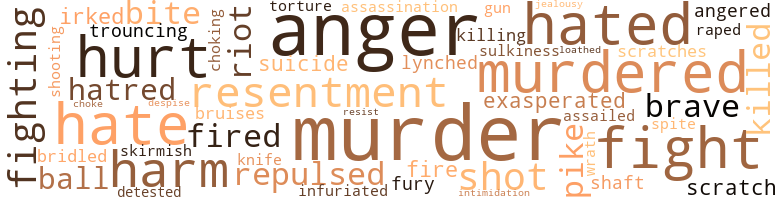
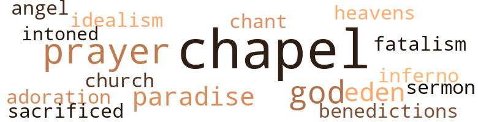

Greater Need Below, by Shaw, O'Wendell (1936)
79 music-related terms matched in this text.
Most frequent terms in this topic: music (10); spirituals (10); piano (9); sing (6); kettles (5)
chant.n.01
Definition: a repetitive song in which as many syllables as necessary are assigned to a single tone
| word | sentence |
|---|---|
| chant | The chant of a fruit vendor tore her attention from the woman and children . |
chapter.n.01
Definition: a subdivision of a written work; usually numbered and titled
| word | sentence |
|---|---|
| chapter | Finally , her eyes weary of the swiftly undulating landscape outside the window , she opened her book at the first chapter and began reading . |
| CHAPTER | CHAPTER TWENTY-FOUR Back at Avon College , from her leave of absence which had ended so sadly with the news of her beloved friend , Madge 's death , Ellen discovered that she had re - turned to a miniature world that now seemed lonelier and emptier than ever before . |
chorus.n.01
Definition: any utterance produced simultaneously by a group
| word | sentence |
|---|---|
| chorus | An - other point against her going home was the fact that her male chorus was to perform for Mrs. Burt on the night of New Year 's eve . |
| chorus | To Ellen , the week passed swifty , and the climax to months of rehearsing her male chorus was just a night off . |
| chorus | Principal Johns has promised to let you and your male chorus go with me to Braxton , a few weeks from now , to sing on the program to be given by some of the State Legislators , at the Gables Hotel there . |
| chorus | Today , Ellen and Mrs. Burt had rehearsed the male chorus in song after song ; all of them spirituals and jubilees . |
croon.v.01
Definition: sing softly
| word | sentence |
|---|---|
| croon | This State 's invested more than a million dollars here to train you folks , an ' we 're glad to see that : our money ai n't raised you above singin ' th ' good ol' spirituals ol' Nancy an ' your other ancestors used to croon to white children ! |
dance.n.01
Definition: an artistic form of nonverbal communication
| word | sentence |
|---|---|
| dance | Therefore , only twice a year were the faculty members permitted a dance on the campus of Avon College , and upon those occasions , Principal Johns , feel - ing himself tolerant to a fault , always stole discreetly away from the campus only to return the next day and dictate letters of dire threat to those single faculty mem - bers whose modern gaiety at the dance ; such as , perhaps , the indulgence in a forbidden cigarette , had fallen under the sharp , censoring eyes of the fox-like treasurer , Jesse Sales . |
| dance | Therefore , only twice a year were the faculty members permitted a dance on the campus of Avon College , and upon those occasions , Principal Johns , feel - ing himself tolerant to a fault , always stole discreetly away from the campus only to return the next day and dictate letters of dire threat to those single faculty mem - bers whose modern gaiety at the dance ; such as , perhaps , the indulgence in a forbidden cigarette , had fallen under the sharp , censoring eyes of the fox-like treasurer , Jesse Sales . |
| dance | The end of many an unwary young faculty mem - ber 's career at Avon College had had its beginning in Jesse Sales ' office after a dance . |
ditty.n.01
Definition: a short simple song (or the words of a poem intended to be sung)
| word | sentence |
|---|---|
| ditty | She noted that Principal Johns was in the midst of the party of whites , comically bouncing one of their babies in the air to the tune of some ante-bellum Negro ditty . |
kettle.n.04
Definition: a large hemispherical brass or copper percussion instrument with a drumhead that can be tuned by adjusting the tension on it
| word | sentence |
|---|---|
| kettles | One again Ellen noted the three large aluminum kettles that sat on the back of the aged gas range - " Mom 's experimental laboratory , " she had often termed them teasingly . |
| kettles | This moment , as often before , Mom was lost to the fact that the two girls stood at the table awaiting her , so absorbed was she in stirring the mixtures in the kettles . |
| kettles | Presently , Mom , suddenly recalling that the two girls awaited her , turned from her kettles . |
| kettles | " No , no , Mom dear , " Ellen argued , " you 're due all the credit for this - you and your incessant stirring in kettles and tinkering with formulas . |
| kettles | As to my stirring in the kettles on the stove : some day I may surprise you , my darling . " |
music.n.01
Definition: an artistic form of auditory communication incorporating instrumental or vocal tones in a structured and continuous manner
| word | sentence |
|---|---|
| music | They give and appropriate millions to educate the Negro in the fine arts , such as music , yet , in comparison , they give almost nothing toward training Negroes in busi - ness and economics - the very things that are the back - bone of this wealthiest of all countries . |
| music | Sometimes when I hear them extolling Negroes for their so-called ' natural music and artistic talent , ' I imagine that they 're laugh - ing to themselves at how easily they are able to thus steer us away from the ambition to master the very things . |
| music | During the rehearsal , she felt as if she would never again hold the plaintive Negro spirituals and jubilees in her heart as music worthy of veneration . |
| music | You see , these white folks like Negro music with plenty of pep in it . |
| music | ' Do n't attempt any white folks ' music ; we 've already had plenty of that . " |
| music | As the director of music , you 've got to be a good mixer . " |
| music | The spring previous , Ellen had donned cap and gown and marched from the hallowed chapel of Northern University , carrying a parchment in her small hand , attesting to hard-earned degrees in education and music . |
| music | She 's the new head of the music depart - ment , and she 's waitin ' on a hundred dollar check now . |
| music | This evening , the meadow and dump of moss-laden evergreens fringing the campus beyond the music con - servatory , beckoned to her more alluringly than ever be - fore . |
| music | With both hands gesturing in space , Johns beat spirited time to the music . |
phrase.n.02
Definition: a short musical passage
| word | sentence |
|---|---|
| phrase | " Often , I recall that phrase that you were always repeating at Avon College : ' there 's a greater need below ' . |
piano.n.01
Definition: a keyboard instrument that is played by depressing keys that cause hammers to strike tuned strings and produce sounds
| word | sentence |
|---|---|
| piano | " Well , " Ellen said , " I 'm only to sit at the piano and accompany the boys ' singing , and when we 're through with the numbers , I suppose we 'll have nothing to do but leave . |
| piano | Sit down at the piano and play your best ! " she whispered to her huskily . |
| piano | How the young men got on the stage , and how she her - self made it to the piano , Ellen never afterward knew . |
| piano | Presently , she found the papers that she had intended to grade , on a piano in the room . |
| piano | She sat down at a piano , bent over it and sobbed quietly . |
| piano | " You 're to play for general singin ' of spirituals and jubilees by the whole school , " he added , " and you might play a selec - tion on the piano yourself . |
| piano | At last in the chapel , she took her seat at the piano . |
| piano | Weakly , Ellen struck the piano , scarcely conscious of the thousand young voices that rang out around her . |
| piano | Finally , he nodded toward Ellen and announced , " Now , Ellen Vance , head of the music department , will render a piano solo ! " |
pipe.n.04
Definition: a tubular wind instrument
| word | sentence |
|---|---|
| pipe | Elis cap was on his head at a rakish angle , and dense clouds of smoke curled from his pipe . |
rap.n.05
Definition: genre of African-American music of the 1980s and 1990s in which rhyming lyrics are chanted to a musical accompaniment; several forms of rap have emerged
| word | sentence |
|---|---|
| rap | A spirited rap on her door snatched her from her reminiscence , and she hurried across the room and opened it in the face of prettey Gail Hines - of all persons , Gail Hines whose escapades both with and without Madge , had precipitated so much trouble on the campus . |
| raps | Presently , Principal Johns called the meeting to order with three loud raps against the table beside him . |
section.n.01
Definition: a self-contained part of a larger composition (written or musical)
| word | sentence |
|---|---|
| section | Ellen was aghast at the magnificance of the new place , as Mom and Mae showed her about what was easily one of the most beautiful estates in that section of the city . |
| section | Even though it was a state institution , its normal freedom , if ever it enjoyed any , had long since been over-shadowed by the influence of Principal Obadiah Johns , who had come there from the presidential chair of a small denominational institution in another section of the state ; one of the many Southern Negro church - schools that are , even to this modern day , cramped and stagnant under puritanical bigotry handed down from an earlier era . |
| section | Once through the swinging door which separated this smoking compartment from the Negro section , Ellen gasped inaudibly , as for the first time in her life , she surveyed a " jim-crow " train compartment . |
sing.v.02
Definition: produce tones with the voice
| word | sentence |
|---|---|
| sing | " The boys sing exceptionally well , so I 'm not uneasy . |
| sing | They 're going to sing you some good old spirituals and jubilees ! |
| sing | Principal Johns has promised to let you and your male chorus go with me to Braxton , a few weeks from now , to sing on the program to be given by some of the State Legislators , at the Gables Hotel there . |
| sing | Now , I want every grateful Negro - every I Negro that 's worth the salt in ' im , to join in th ' song service an ' sing such songs as only Negroes can sing ! |
| sing | Now , I want every grateful Negro - every I Negro that 's worth the salt in ' im , to join in th ' song service an ' sing such songs as only Negroes can sing ! |
| sing | He turned and nodded his head to Ellen , then added , " Now , we 'll sing ' Swing Low Sweet Chariot . ' " |
singing.n.01
Definition: the act of singing vocal music
| word | sentence |
|---|---|
| singing | " Well , " Ellen said , " I 'm only to sit at the piano and accompany the boys ' singing , and when we 're through with the numbers , I suppose we 'll have nothing to do but leave . |
sonata.n.01
Definition: a musical composition of 3 or 4 movements of contrasting forms
| word | sentence |
|---|---|
| sonata | At last , the lilting strains of a famous sonata trickled into her mind , and instantly the keys became animate at the skillful touch of her fingers . |
| sonata | we ai n't a dam ' bit surprised ! " he spat venom-ously , " for darkies trained down here would n't think of insulting white people by tryin ' to play a sonata ! |
song.n.01
Definition: a short musical composition with words
| word | sentence |
|---|---|
| song | Today , Ellen and Mrs. Burt had rehearsed the male chorus in song after song ; all of them spirituals and jubilees . |
| song | Today , Ellen and Mrs. Burt had rehearsed the male chorus in song after song ; all of them spirituals and jubilees . |
| song | Now , I want every grateful Negro - every I Negro that 's worth the salt in ' im , to join in th ' song service an ' sing such songs as only Negroes can sing ! |
| songs | Now , I want every grateful Negro - every I Negro that 's worth the salt in ' im , to join in th ' song service an ' sing such songs as only Negroes can sing ! |
| song | He remained standing until he had steered the singers through a number of spirituals ; one verse , two verses , and all the verses in each song ! |
| songs | It carried me back to my child - hood when old Nancy , my black mammy , used to go ' bout her washin ' and ' cookin , ' singin ' them ol' songs . |
spinet.n.02
Definition: early model harpsichord with only one string per note
| word | sentence |
|---|---|
| spinet | Ellen sat down at the delicately carved spinet desk , fully determined to find him . |
spiritual.n.01
Definition: a kind of religious song originated by Blacks in the southern United States
| word | sentence |
|---|---|
| spirituals | During the rehearsal , she felt as if she would never again hold the plaintive Negro spirituals and jubilees in her heart as music worthy of veneration . |
| spirituals | Strictly jubilees and spirituals . |
| spirituals | They 're going to sing you some good old spirituals and jubilees ! |
| spirituals | " They 'll want only spirituals for this occasion , " Mrs. ' Burt added , a note of warning in her tone . |
| spirituals | Today , Ellen and Mrs. Burt had rehearsed the male chorus in song after song ; all of them spirituals and jubilees . |
| spirituals | She knew just about what his program would consist of - spirituals and jubilees ! |
| spirituals | Already , she told herself , she loathed spirituals and jubilees . |
| spirituals | " You 're to play for general singin ' of spirituals and jubilees by the whole school , " he added , " and you might play a selec - tion on the piano yourself . |
| spirituals | He remained standing until he had steered the singers through a number of spirituals ; one verse , two verses , and all the verses in each song ! |
| spirituals | This State 's invested more than a million dollars here to train you folks , an ' we 're glad to see that : our money ai n't raised you above singin ' th ' good ol' spirituals ol' Nancy an ' your other ancestors used to croon to white children ! |
suite.n.01
Definition: a musical composition of several movements only loosely connected
| word | sentence |
|---|---|
| suite | Within several weeks now , scores of ambitious Negro students would be crossing that welcoming threshhold , and contemplation of this filled the hearts of the young husband and wife with unbounded gladness as the two strolled up the pavement to the newly furnished suite of administrative offices on the second floor where the architect 's drawings and blue prints awaited their reg - ular daily inspection . |
tapdance.v.01
Definition: dance and make rhythmic clicking sounds by means of metal plates nailed to the sole of the dance shoes
| word | sentence |
|---|---|
| tapped | She felt that , some - how , they tapped out a pathetic farewell which meant forever . |
tone.v.01
Definition: utter monotonously and repetitively and rhythmically
| word | sentence |
|---|---|
| intoned | " Faculty and students of Avon College for Negroes , hear ye ! " he intoned , " This mornin ' we 're honored by the presence of Mr. Hicks , Mr. Riggs and Mr. Perry , our good State legislators , an ' a number of other good white folks in their party . |
tune.n.01
Definition: a succession of notes forming a distinctive sequence
| word | sentence |
|---|---|
| tune | Three tempting discs of grape fruit were at as many places , on a spotless table cover , and Mom hummed a lilting tune as she retrieved a pan of crisp cereal from the oven and disconnected a bubbling perco - later from an electric socket . |
| lines | After it was finished , and she was slipping it into an envelope , she felt a sudden impulse to tear it to bits because she imagined that he might , some - how , discern between its very formal business-like lines the yearning that swelled deep in her heart for him . |
| line | Mrs. Burt , State home demonstration agent , entered the hall and halted in line just behind Ellen . |
| line | Ellen stepped out of line and walked down the hall , the while wondering why her check was being held up . |
| tune | She noted that Principal Johns was in the midst of the party of whites , comically bouncing one of their babies in the air to the tune of some ante-bellum Negro ditty . |
whistle.v.01
Definition: make whistling sounds
| word | sentence |
|---|---|
| whistle | Across the eastern expanse of prairie , the shrill whistle of the North-bound evening train pierced the scented atmosphere , sending a chill through her heart , as she imagined that one evening , very soon , perhaps , Dewalt Brooks , the one and only man in her life , might be on that train , leaving her alone with only fond memories and uncertain hopes . |
| whistle | The shrill whistle of the train pierced the early morn - ing air , and the porter shuffled through yelling A-v-o-nl A-v-o-n ! |
110 violence-related terms matched in this text.
Most frequent terms in this topic: murder (10); anger (9); fight (5); hated (5); hate (5)
abhor.v.01
Definition: find repugnant
| word | sentence |
|---|---|
| loathed | Already , she told herself , she loathed spirituals and jubilees . |
abrasion.n.01
Definition: an abraded area where the skin is torn or worn off
| word | sentence |
|---|---|
| scratch | Just like that table there : scratch from it its veneered surface , and you have nothing left but the rough wood . |
| scratches | The low-cut dress she wore revealed several scratches and bruises on her well-formed shoulders . |
anger.n.01
Definition: a strong emotion; a feeling that is oriented toward some real or supposed grievance
| word | sentence |
|---|---|
| anger | " If you niggers want to go up , git back yonder to that baggage lift ! " he added , his anger flaming by this time . |
| anger | Sales ' anger flamed . |
| anger | Chagrin was now taking the place of his anger . |
| anger | Madge clenched her teeth in anger : " No colored man is involved ! " she told him . |
| anger | Ellen interrupted her hotly , " especially since I find that the Principal 's wife is contributing to the corruption of this place ! " she added with growing anger at the wom - an 's insulting slurs . |
| anger | With anger and hatred gleaming in her malevolent eyes , she deliberately refused the seat Ellen proffered her . |
| anger | She knew that anger of the most bitter sort , rankled in his heart . |
| anger | As she sealed it , Madge , aroused from her slumber by the light , sat up in her bed , her eyes flashing in anger . |
| anger | Madge 's cheeks were crimson from anger , and her dark eyes were aflame . |
anger.v.02
Definition: become angry
| word | sentence |
|---|---|
| angered | He was angered when he saw that his prospective passengers were not of his own hue . |
attack.v.01
Definition: launch an attack or assault on; begin hostilities or start warfare with
| word | sentence |
|---|---|
| assailed | Suddenly , she was assailed by the thought : " Why not ? |
bridle.v.01
Definition: anger or take offense
| word | sentence |
|---|---|
| bridled | " Just like someone went about through the night and bridled their tongues , " she added with a slight laugh . |
bruise.n.01
Definition: an injury that doesn't break the skin but results in some discoloration
| word | sentence |
|---|---|
| bruises | The low-cut dress she wore revealed several scratches and bruises on her well-formed shoulders . |
brush.n.06
Definition: a minor short-term fight
| word | sentence |
|---|---|
| skirmish | Carmelita opened the skirmish with a question hurled through lips that were twisted in a smirk : " Is it really true that you 're one of those around here who promised Madge Conley that you 'd keep the facts of her sickness from her mother ? " she wanted to know . |
bullying.n.01
Definition: the act of intimidating a weaker person to make them do something
| word | sentence |
|---|---|
| Intimidation | Intimidation was an important part of his art , and once more , it had worked perfectly . |
character_assassination.n.01
Definition: an attack intended to ruin someone's reputation
| word | sentence |
|---|---|
| assassination | Ellen dropped back on her bed limply , suddenly pos - sessed by a feeling of guilt at the thought of withholding a possible clue to the assassination of Dean Warren . |
contemn.v.01
Definition: look down on with disdain
| word | sentence |
|---|---|
| despise | Madge said , then , ' " You know , Ellen , I despise him ! |
fight.n.05
Definition: a boxing or wrestling match
| word | sentence |
|---|---|
| fight | Madge cried , " and I do n't mind dying - " " Yes - yes , " Ellen cut her short , " we have rights , but would a fight with that group of whites give us our rights ? |
fight.v.02
Definition: fight against or resist strongly
| word | sentence |
|---|---|
| fight | " Whatever happens , " she went on , " I 'm going to stay here and fight for all I 'm worth ! |
| fighting | Suddenly , the hysterical girl was a snarling tigress , fighting at an unseen foe . |
| fight | I 'll stay here and fight it through ------- " " Madge , please ! " |
| fight | Yes , she was thinking , of course I 'm going to fight for my life ! |
| fighting | Madge , with her mother , was now in sunny Arizona , fighting a losing battle for her health . |
| fighting | " But , maybe I did n't try hard enough , Mom , " she sug - gested thoughtfully , " maybe -------- maybe if I had had the courage that you have , I 'd be there now fighting and gradually surmounting the difficulties that confronted me , instead of being here doubting and questioning the education I 'm supposed to have , " Mom looked at the girl seriously and questioningly . |
| fight | now , come up heah an ' let 's fight it out ! " |
fury.n.01
Definition: a feeling of intense anger
| word | sentence |
|---|---|
| fury | Momentarily , darts of lightning slashed the darkness , and she soon realized that another storm was gathering , which , any minute now , would be drenching the country-side with its raging fury of water . |
gag.v.06
Definition: cause to retch or choke
| word | sentence |
|---|---|
| choking | Ellen , a lump suddenly choking her , came foward and placed an unsteady but soothing arm about the ailing girl : " Now , darling , " she said with emotion , " we must n't part this way ! |
| choke | It seemed to her as if the lump in her throat would choke her . |
gall.v.02
Definition: irritate or vex
| word | sentence |
|---|---|
| irked | He was visibly irked and stared insolently at them over his grotesque glasses . |
gun.n.01
Definition: a weapon that discharges a missile at high velocity (especially from a metal tube or barrel)
| word | sentence |
|---|---|
| gun | Did Gail intend to be prepared to hold him up at the point of a gun ? |
hate.n.01
Definition: the emotion of intense dislike; a feeling of dislike so strong that it demands action
| word | sentence |
|---|---|
| hatred | With anger and hatred gleaming in her malevolent eyes , she deliberately refused the seat Ellen proffered her . |
| hate | She advanced no closer upon Car - melita Johns who now stood against the door , facing her , a grin of hate twisting the corners of her heavily car - mined lips . |
| hatred | Somewhere beneath the hatred that exuded from Carmelita Johns must surely be a tender spot ; at least for innocent , trusting mothers , Ellen rea - soned , and she herself must , in some way , probe through her base exterior to this spot . |
hate.v.01
Definition: dislike intensely; feel antipathy or aversion towards
| word | sentence |
|---|---|
| hated | Somehow , Madge was convinced that Ellen spoke the truth , but she hated to admit it . |
| hated | Suddenly , she hated her ; hated the Southland , and even the teach - ing profession . |
| hated | Suddenly , she hated her ; hated the Southland , and even the teach - ing profession . |
| hated | For the moment , she hated everything ! |
| hate | Why , it was no more than an inferno of prejudice and hate ! |
| hated | Often she had forgotten important things at the conservatory , and always , she hated the ordeal of having to return to that dark , empty building for them . |
| detested | Although Mom detested so much publicity , she had not complained once - just conceded it all as the right of the press . |
| hate | I hate her , and all these other Negroes here who happen to have a little authority ! |
| hate | - I hate this place ! |
| hate | Then more thoughtfully , " I just hate to leave you here ! " |
infuriate.v.01
Definition: make furious
| word | sentence |
|---|---|
| exasperated | He left Madge angrily exasperated . |
| infuriated | Frightened out of her wits , Ellen had wrenched her - self from the infuriated woman and retired to an adjoin - ing room . |
injury.n.01
Definition: any physical damage to the body caused by violence or accident or fracture etc.
| word | sentence |
|---|---|
| harm | He means no harm ! " |
| harm | " No - no harm ? " the heartsick girl articulated . |
| harm | " You have n't done me so much harm as you 've done yourself . " |
| hurt | Seeing the hurt look in the other 's eyes , Madge quick - ly shifted the conversation : " Well , I must be getting out to those bone-headed students , " she said , moving toward the door . |
| harm | Everybody here seemed to be in possession of some secret which he or she was coerced into keeping , by threat of bodily harm or loss of position . |
| hurt | Ellen tried to hide her hurt amazement behind a smile which failed to register . |
| hurt | Ellen felt more like crying , so hurt was she at this sudden flare of sectional prejudice . |
| hurt | Somehow , she knew that Madge was extremely fond of herself too , , Often Madge 's brutal way of reasoning cut deeply , but some sis - terly deed of that fiery girl 's always followed and assuaged the hurt . |
jealousy.n.01
Definition: a feeling of jealous envy (especially of a rival)
| word | sentence |
|---|---|
| jealousy | His words , and the tone in which he uttered them , seemed the expression of a different man - a man struggling in the throes of wounded pride , or could it be plain jealousy ? |
kill.v.10
Definition: cause the death of, without intention
| word | sentence |
|---|---|
| killing | Just another case like that Vinson College killing in North Carolina last year ! " |
| killed | They already know who killed her ! |
| killed | " Thought I could find another mess of them before the frost killed them . |
knife.n.02
Definition: a weapon with a handle and blade with a sharp point
| word | sentence |
|---|---|
| knife | Then , pulling a small butcher knife out of the bag , she carved several hunks of the meat from the shank , passed them to the patiently wait - ing girl and boy , and mumbled some sort of thanks to an unseen provider . |
lynch.v.01
Definition: kill without legal sanction
| word | sentence |
|---|---|
| lynched | Often , they had heard that in the South , Negroes were not allowed to walk on the side - walks ; Negro women were often the prey of low-bred white men ; Negro men were lynched at the least provoca - tion ; Negro schools were deficient ; ignorance among Ne - groes was rampant , and the first three of these evils were no respectors of place or person - down there . |
malice.n.01
Definition: feeling a need to see others suffer
| word | sentence |
|---|---|
| spite | Too , she thought , it might be cowardly for her to leave this place , which , in spite of everything , yet needed her services so much , To leave would admit failure , she thought reproachfully . |
murder.n.01
Definition: unlawful premeditated killing of a human being by a human being
| word | sentence |
|---|---|
| murder | " But just who could have the heart to murder Dean Warren ? " |
| murder | If they knew what she said , they might try to hang this murder on her , to detract suspi - cion from these whites who , I 'm certain , are in some way implicated . |
| murder | This very moment , they have an idea that whites are behind Dean , Warren 's murder , and they 're not anxious to have the guilty one singled out . |
| murder | , and many times , Ellen had shuddered at the thought that she and Madge were , perhaps , with - holding information which might lead to the immediate solution of Dean Warren 's murder . |
| murder | That night , after Madge had quit talking and fallen asleep , Ellen lay awake , regretful that she had slept dur - ing the earlier hours of the evening , for now , in her in - ability to go to sleep , she was exposed to the haunting thoughts of the unsolved Warren murder . |
| murder | " I 'm going to tell him what I know about Dean Warren 's murder ! " |
| murder | " It 's a clue that might help in the solution of Dean Warren 's murder ! " she said , then added , " Gail Hinds may ------- " but got no further . |
| murder | The same white man whose intimate pal was that younger white man who , without doubt , had been involved in Dean War - ren 's murder , because she dared to interfere with his amorous interest in a Negro girl ! |
| murder | " I ---- well , I told you , that night , that I would n't so lower myself as to ------ " Carmelita cut her short : " If you were low enough to hide your friend 's abortion and murder from her mother , there 's nothing else too low for you to do ! " |
| murder | Abortion and murder were serious crimes , she reasoned . |
murder.v.01
Definition: kill intentionally and with premeditation
| word | sentence |
|---|---|
| Murdered | " Murdered in cold blood , Ellen ! " said Madge husk - ily . |
| murdered | Madge went on : " Gail said Dean Warren had better look out ------- " she paused thoughtfully , then , " why it 's as plain as day who murdered her , or had her murdered ------ some of these dirty low-down ' crackers ' , that 's who ! " |
| murdered | Madge went on : " Gail said Dean Warren had better look out ------- " she paused thoughtfully , then , " why it 's as plain as day who murdered her , or had her murdered ------ some of these dirty low-down ' crackers ' , that 's who ! " |
| Murdered | " Murdered in cold blood , and I withholding a possible due ! " |
| murdered | Up until the Civil War , these two thousand acres comprised the plantation of a rich white planter who owned several thousand slaves ; so many , it is said , that he murdered them at the least prov - ocation , and never missed them . |
musket_ball.n.01
Definition: a solid projectile that is shot by a musket
| word | sentence |
|---|---|
| balls | When not tripping behind the balls on a court , they sat together on the low-hung bleachers and talked . |
| ball | Encouraging no more from Madge , Ellen moved over to the east window and looked out across the campus toward the rising harvest moon , which loomed on the dark blue horizon like a polished ball of copper . |
open_fire.v.01
Definition: start firing a weapon
| word | sentence |
|---|---|
| fired | You see , Mr. Sales fired him yesterday evenin , ' an ' had our things set out this mornin . ' " |
| Fired | " Fired him for what ? " the question was for Zelma , but Madge 's eyes met those of Ellen 's , and the two awaited Zelma 's reply . |
| fire | He said , apologetically : " It 's disgusting that I always have to stand by and see that these laborers take no more than what belongs to 'em when I fire 'em ! " |
pain.v.02
Definition: cause emotional anguish or make miserable
| word | sentence |
|---|---|
| hurt | Madge was flushed and hurt . |
pike.n.04
Definition: medieval weapon consisting of a spearhead attached to a long pole or pikestaff; superseded by the bayonet
| word | sentence |
|---|---|
| pike | Little in the way of conversation passed be - tween them as the car sped along the pike bound for Avon Colege . |
| pike | The pike before them wended its way through the country like a skein of satin ribbon . |
rape.v.01
Definition: force (someone) to have sex against their will
| word | sentence |
|---|---|
| raped | " Gill , your general manager , doped me and raped me , that ! |
repel.v.03
Definition: force or drive back
| word | sentence |
|---|---|
| repulsed | Ellen had answered that , perhaps , she would come home , but suddenly awakened to the realization that now Avon College held a strange fascination for her ; some - thing which compelled yet repulsed ; something akin to the deadly gleam in the eyes of a serpent with prey at bay . |
| repulsed | Despite herself Madge was repulsed by the secluded appearance of the place , and felt slightly faint , as she and Ellen followed Doctor Swanson into the modernly equipped waiting room . |
resentment.n.01
Definition: a feeling of deep and bitter anger and ill-will
| word | sentence |
|---|---|
| resentment | She won - dered if these smirkish glances were their expression of resentment at the sight of a Negro girl reading a book . |
| resentment | Equally hard was her struggle to hide expressions of resentment at some of his implications and insinuations . |
| resentment | " Negroes down here receive so little consideration , " she told herself , " yet pay so much in self-respect for the little that they do receive , ' Somehow , as she walked along , she could sense the atmosphere of resentment which hovered over the campus as a result of the presence of the disrespectful whites . |
| resentment | Presently , the campus bell rang , and the students , many of whose expressions revealed keen resentment , filed in boys through one entrance and girls through the other . |
resist.v.04
Definition: withstand the force of something
| word | sentence |
|---|---|
| resist | Unable to resist them longer , she found herself going t : o them . |
riot.n.01
Definition: a public act of violence by an unruly mob
| word | sentence |
|---|---|
| riot | The out-of-doors was a floral riot of color , from the delicate tint of blue-bon - nets and wild roses to the creamy white of fragrant magnolia blossoms in the trees . |
| riot | Below her lay a spacious sunken garden awaiting the brilliant rays of the sun that would transform it into a riot of rich , autumnal colors . |
shoot.v.02
Definition: kill by firing a missile
| word | sentence |
|---|---|
| shot | " I just stopped by to ask if y' all heard ' bout Dean Warren gettin ' shot this mornin , ' fore day ? " |
| shot | " Who shot Dean Warren , Virginia ? " she cried , shaking the girl anxiously . |
| shot | " Someone shot her from bellin ' while she was takin ' her walk by the lake . |
shooting.n.02
Definition: killing someone by gunfire
| word | sentence |
|---|---|
| shooting | With the passing of time , the stifled hysteria which folowed the fatal shooting of Dean Nancy Warren , subsided , and though the perpetrator of the crime had not been apprehended , college activities were back to normal . |
spear.n.01
Definition: a long pointed rod used as a tool or weapon
| word | sentence |
|---|---|
| shaft | Inside the building , the party stopped at a passenger elevator shaft , and Mrs. Burt pressed a button . |
sting.n.03
Definition: a painful wound caused by the thrust of an insect's stinger into skin
| word | sentence |
|---|---|
| bite | Momentarily she expected to see the woman withdraw bread of some kind from the bag , but none was made evident , yet the eating went on - each time , a bite of meat , followed by a bite of potato . |
| bite | Momentarily she expected to see the woman withdraw bread of some kind from the bag , but none was made evident , yet the eating went on - each time , a bite of meat , followed by a bite of potato . |
suicide.n.01
Definition: the act of killing yourself
| word | sentence |
|---|---|
| suicide | " Of course , I know that attempting such a thing would mean social suicide around here , " she said , " but perhaps I would n't care anyway . |
sulkiness.n.02
Definition: a feeling of sulky resentment
| word | sentence |
|---|---|
| sulkiness | Strangely enough , her former dynamic spirit was gone leaving in its place an uneasy sulkiness - a brooding stoicism , which expressed itself in her almost constant silence . |
thrashing.n.01
Definition: a sound defeat
| word | sentence |
|---|---|
| trouncing | I gave Gail a thorough trouncing for not putting me next to the old hussy sooner . |
torment.v.01
Definition: torment emotionally or mentally
| word | sentence |
|---|---|
| torture | She had suddenly decided that she must not torture Madge with more disgusting news from this place . |
weather.v.01
Definition: face and withstand with courage
| word | sentence |
|---|---|
| brave | " There now , darling , " she comforted her , " you must be brave and bear it ! |
| brave | You must remember , she was always a very brave girl herself . |
wrath.n.01
Definition: intense anger (usually on an epic scale)
| word | sentence |
|---|---|
| Wrath | Wrath was not the instru - ment for doing this . |
36 religion-related terms matched in this text.
Most frequent terms in this topic: chapel (13); prayer (4); God (3); Eden (2); benedictions (1)
blessing.n.05
Definition: the act of praying for divine protection
| word | sentence |
|---|---|
| benedictions | At some juncture along its rapid and breathtaking revolutions , she married Dewalt Brooks , with the loving benedictions of her mother and the tender admiration of Mae who had now emerged from Northern University , a promising and much admired debutante . |
chant.n.01
Definition: a repetitive song in which as many syllables as necessary are assigned to a single tone
| word | sentence |
|---|---|
| chant | The chant of a fruit vendor tore her attention from the woman and children . |
chapel.n.01
Definition: a place of worship that has its own altar
| word | sentence |
|---|---|
| chapel | The spring previous , Ellen had donned cap and gown and marched from the hallowed chapel of Northern University , carrying a parchment in her small hand , attesting to hard-earned degrees in education and music . |
| chapel | All the men have to sit on one side of the chapel , and the women sit on the other - the management 's idea of discipline , you know . " |
| chapel | The chapel occupied the second floor of an old , brick building , the first floor of which was the students ' dining hall . |
| chapel | Two entrances led into the chapel ; one at the head of a long flight of stairs on one side of the building , and the other at the head of an equally long flight of stairs on the opposite side . |
| chapel | Later , seated in the chapel , he espied the two young women and smiled his recognition , receiving their smiles in return . |
| chapel | It ordered all faculty members to meet in the chapel , with the student-body , at eleven o'clock . |
| chapel | Johns did n't have to answer , beyond a wide grin and a nod of his bald head , for Treasurer Jesse Sales , the gold teeth in his mouth glittering in a broad grin , stepped forward from the outer edge of the crowd and directed them to the chapel , himself hurrying ahead of them . |
| chapel | The Principal handed the white baby in his arms to a woman in the crowd and bowed low , as she hurried from him to catch up with the crowd now well on its way to the chapel . |
| chapel | At last in the chapel , she took her seat at the piano . |
| chapel | At last , out of the stuffy chapel , into fresh air , Ellen breathed deeply of relief . |
| chapel | She hastened to overtake Madge who had hurried out of the chapel and across the campus with the bulk of the crowd . |
| chapel | The following morning , Avon College did not return to normal activities ; instead , the student-body and faculty filed into the chapel at the summons of Principal Johns . |
| chapel | The students , thoroughly bluffed , filed out of the chapel in the usual order . |
church.n.04
Definition: the body of people who attend or belong to a particular local church
| word | sentence |
|---|---|
| church | Even though it was a state institution , its normal freedom , if ever it enjoyed any , had long since been over-shadowed by the influence of Principal Obadiah Johns , who had come there from the presidential chair of a small denominational institution in another section of the state ; one of the many Southern Negro church - schools that are , even to this modern day , cramped and stagnant under puritanical bigotry handed down from an earlier era . |
eden.n.01
Definition: any place of complete bliss and delight and peace
| word | sentence |
|---|---|
| Eden | Indeed , she must have paused | at Avon College for an extra wave of her magic wand , for now , the campus was a veritable Garden of Eden . |
| heavens | The ethereal stars shed a frigid glow of light across the blue - canopied heavens , and the street lights blinked here and there on the inanimate campus . |
| Paradise | Maybe ------------- maybe we 're on the very threshhold of Paradise ! |
| Eden | " A garden of Eden in comparison to what I expected , " Dewalt said . |
| paradise | Whether or not Avon College should measure up to its very suggestive name , she felt that what she would be doing there would surely make it a paradise for her , and , in addition , she would be earning more money than she and Mom together had ever earned before . |
fatalism.n.02
Definition: a philosophical doctrine holding that all events are predetermined in advance for all time and human beings are powerless to change them
| word | sentence |
|---|---|
| fatalism | " Doubtless , " she said presently , " a change of climate and environment will help you , but I think your fatalism is uncalled for , darling . |
god.n.03
Definition: a man of such superior qualities that he seems like a deity to other people
| word | sentence |
|---|---|
| God | By God , you 're wasting time , if you are . |
| God | " Neither do I , by God ! " |
| God | Ninety dollar a month is what you 'll take , else - By God , you may as well begin packing ! " |
hell.n.03
Definition: (Christianity) the abode of Satan and the forces of evil; where sinners suffer eternal punishment; - John Milton; ; -Dr. Johnson
| word | sentence |
|---|---|
| inferno | Why , it was no more than an inferno of prejudice and hate ! |
idealism.n.01
Definition: (philosophy) the philosophical theory that ideas are the only reality
| word | sentence |
|---|---|
| idealism | Dewalt had been quietly studying her with adoration in his eyes ; deeply admiring her idealism . |
prayer.n.01
Definition: the act of communicating with a deity (especially as a petition or in adoration or contrition or thanksgiving)
| word | sentence |
|---|---|
| prayer | No , " she shrugged , " I 'll stay here and , maybe , whisper a prayer for you . " |
| prayer | Perhaps I can think a prayer for poor Madge . " |
| prayer | Mae sat still and collected , and , presently through the corner of an eye , saw her sister 's lips move as if in silent prayer . |
| prayer | She whispered a prayer of relief when the selection was finished and the applause had died away . |
sacrifice.v.04
Definition: make a sacrifice of; in religious rituals
| word | sentence |
|---|---|
| sacrificed | Why , I even sacrificed love and marriage for my career . |
saint.n.02
Definition: person of exceptional holiness
| word | sentence |
|---|---|
| angel | " Ellen , " Madge began in a calmer voice , " darling , you 're an angel to me ! |
sermon.n.02
Definition: a moralistic rebuke
| word | sentence |
|---|---|
| sermon | " Cut the sermon anyway and let 's hit the hay ! |
tone.v.01
Definition: utter monotonously and repetitively and rhythmically
| word | sentence |
|---|---|
| intoned | " Faculty and students of Avon College for Negroes , hear ye ! " he intoned , " This mornin ' we 're honored by the presence of Mr. Hicks , Mr. Riggs and Mr. Perry , our good State legislators , an ' a number of other good white folks in their party . |
worship.n.02
Definition: a feeling of profound love and admiration
| word | sentence |
|---|---|
| adoration | Dewalt had been quietly studying her with adoration in his eyes ; deeply admiring her idealism . |